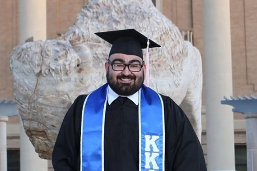

Board of Directors
Chair: Mikaela Rhodes SWDAACHAIR@GMAIL.com
Rhodes was initiated into the Psi Chapter at the University of Arkansas in Fall 2012. Mikaela served as the Recording Secretary for the 2013-2015 terms and Treasurer for the 2015-2016 term during her undergraduate career. She graduated in May 2016 with degrees in International Relations and German. She then went on an adventure to Neumünster, Germany as a Fulbright English Teaching Assistant for a year.She taught German children about American culture and politics and had the joy of riding a bike every day to school. She completed her master’s degree in International Affairs in May 2019. In her free time, she likes reading, rock climbing, kickboxing, and playing with her cat.
Contact Mikaela at swdaachair@gmail.com. You can link up with her on Facebook, Instagram, or LinkedIn.Membership Director: Evelyn Jones SWDAAMEMBERSHIP@GMAIL.com
Evelyn (Eve) Jones was initiated to the Beta Nu Chapter of Tau Beta Sigma at Arkansas Tech University in the spring of 2015. She first graduated in 2012 with a Bachelor’s of Science in Professional Studies. After returning to Arkansas Tech in 2013, she graduated with her second Bachelor's of Science degree in Early Childhood Education in 2017. As an active member, she served 1 year as Historian and was a part of several committees. She currently works in Arkansas at Paris Elementary School as a First Grade teacher. While in college, she was also a member of Sigma Alpha Iota serving on the executive board as Vice President of Membership (2 years) and Sergeant of Arms. She is married with 3 beautiful children and 4 fur babies. She has been married for almost 10 years but they have been together for 15 years. Her children are Alex age 6, Arianna age 4, and Julianna age 2. Of her fur babies, she has 2 cats named Poncho and Simba and 2 dogs named McGee and Sheara. She loves being with her family/friends and working with children. Miniature, long-haired weenie dogs are her favorite breed of dog. She is a huge Disney and Star Wars fan. She also collects shot glasses of places and states that she has been to. In her free time, she enjoys reading, playing video games, watching tv, 4-wheeling, making music, playing softball and basketball with her kids and archery. Contact Eve at swdaamembership@gmail.com. You can also link up with her on Facebook, Instagram or Snapchat.Programs Director: Hannah Wells SWDAAPROGRAMS@GMAIL.com
Hannah Wells was initiated into the Psi chapter of Tau Beta Sigma at the University of Arkansas in the Spring of 2014. As an active, Hannah served as Psi's Vice President of Philanthropy and Ritual Chair. She also served as the SWD Vice President of Special Projects for the 2016-2017 term. She graduated in August of 2017 with a Bachelor of Science in Educational Studies. She moved back home to Oklahoma City, Oklahoma to be closer to her family and got a job teaching at Tulakes Elementary School in Putnam City District. She taught 2nd grade for 2 years and now teaches 4th grade. In the summertime, Hannah works for a local day camp that she has been at for 6 years now, as well as volunteers for a respite care program monthly as she has for 16 years. In her limited free time, Hannah enjoys the outdoors (aka swimming and tanning), playing board games, spending time with her family, and watching Friends while attempting to cuddle with her cat, Pheebo. Communications Director: Connor Terry SWDJOINTALUMNI@GMAIL.com
Connor Terry was initiated into the Alpha Chapter of Kappa Kappa Psi at Oklahoma State University in Spring of 2013. During his time as an active member, he served as the Alumni Relations officer for 3 years and as the Co-Member at Large for the Southwest District during the 2015-2016 school year. In May 2016 he graduated with a Bachelor’s of Arts in Psychology and a minor in Sociology, and later earned his Master’s degree in Educational Leadership Studies with an option in College Student Development in May 2019. He currently works at his alma mater (OSU) as an Academic Advisor within the Chesapeake Energy Business Student Success Center, but in his free time he runs social media for other organizations, co-hosts and edits a podcast, and spends a lot of time at the Disney parks. You can catch him on Facebook, Twitter, or LinkedIn.
Finance Director: Ross Fondren SWDAAFINANCE@GMAIL.COM
Ross Fondren was initiated into the Lambda chapter of Kappa Kappa Psi at the University of Arkansas in Fall 2009. Ross served as the chapter’s Corresponding & Alumni Secretary in 2012-2013 and as Ritual Chair during 2013-14. He also represented the chapter at multiple district and national conventions. He graduated in May 2014 with a B.A. Music. Ross became a Life Member of Kappa Kappa Psi in Fall 2018. Ross currently works at his local UPS (United Parcel Service,) as an assistant manager for both On-Road and Preload Operations. When he is not working early hours or focused on SWDAA duties, Ross enjoys spending time with his dog, Arwen, running or biking, and refereeing soccer. You can email Ross at swddaafinance@gmail.com or connect via Facebook, Instagram, and Twitter.